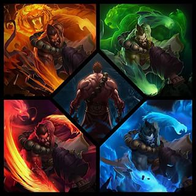

Sobre Nosotros
Hemos creado esta pagina para ayudar a los jugadores que quieran mainear la top lane.
Para ello, hemos introduccido una pequeña guia sobre cuales son las formas de ganar la linea en top,
explicando metodos para evitar morir mucho, para lograr presionar al rival, lograr farmear mucho mas y asi conseguir
los objetos mas rapido para poder ayudar mejor a tu equipo y ganar todas las partidas.

Ranking mejores jugadores
| Nombre |
Partidas jugadas |
Asesinatos |
Asistencias |
| TipleH10 |
50 |
5830 |
10394 |
| Lagiacrus1808 |
50 |
5782 |
9687 |
| Davidbetico1996 |
50 |
5699 |
9898 |
| xPeke |
50 |
5600 |
10534 |
Las trampas mas molestas que te puedes encontrar en la grieta
- setas de teemo
- cajas de shaco
- trampas de jhin
setas de teemo
- Habilidad definitiva de teemo la cual es invisible y cuando pasas por encima explota,
ralentizandote y envenenandote lo que frustra muchos planes de pelea o gankeos
cajas de shaco
- Habilidad de shaco la cual es invisible tambien como la seta de teemo y cuando pasas por delante
salta causandote un fear que te hace retroceder y ademas te hace daño
trampas de jhin
- Habilidad de jhin que tambien es invisible y cuando pasas por encima la detonas causando que te
ralentize y marcandote para que jhin te dispare y te deje stuneado encima lo cual si explota la trampas
debajo de ti te causara daño